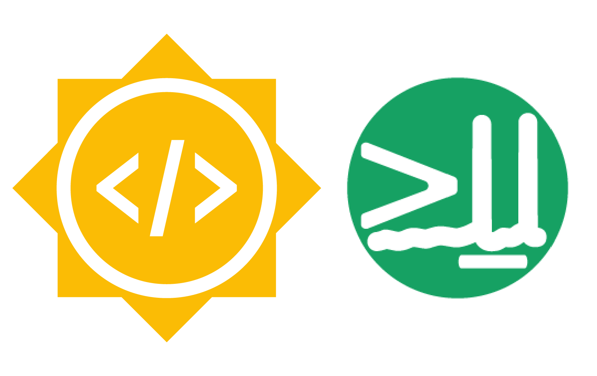
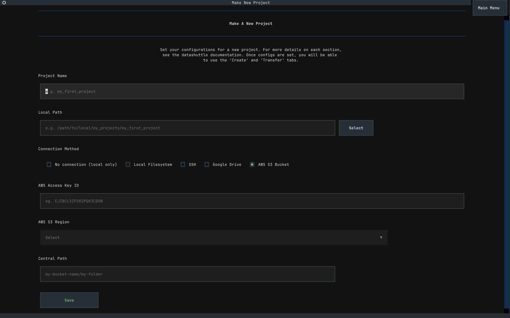
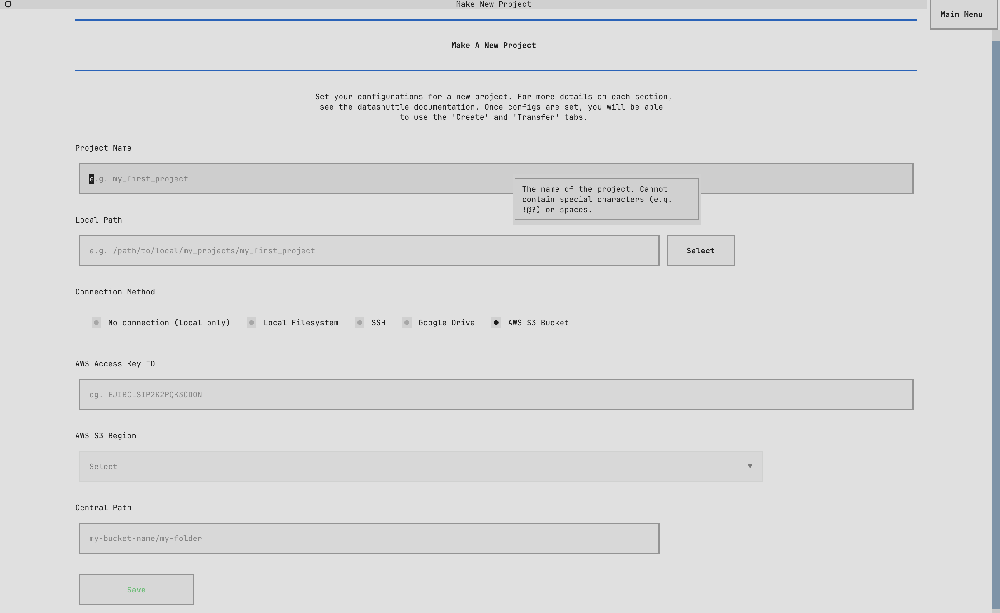
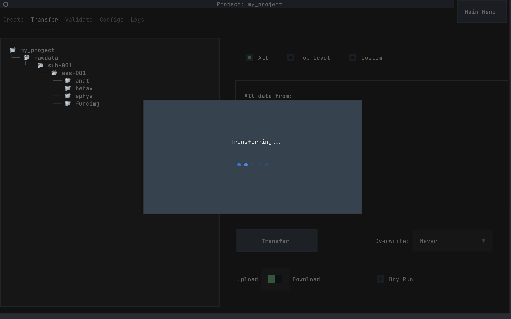
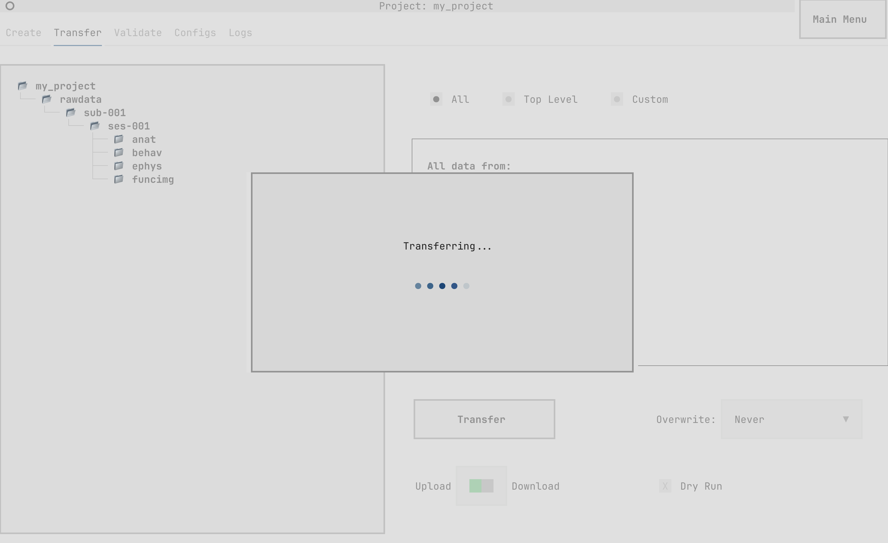

Add Google Drive and AWS to datashuttle - Final GSoC Report#

{kind=link}
Introduction#
I am Shrey, this summer I contributed to datashuttle, a tool for the creation, validation and transfer of neuroscience project folders, as part of Google Summer of Code 2025. I worked on adding Google Drive and Amazon Web Services (AWS) buckets as remote storage options to datashuttle.
Mentors: Joseph Ziminski, Niko Sirmpilatze, Adam Tyson
Project Overview#
Neuroscientists typically collect diverse types of data during experiments, including behavioral data (such as camera feeds tracking animal movement), electrophysiological data from neural probes, imaging data from microscopes, and physiological measurements. When researchers use different data organization schemes across labs or even within the same lab, it creates significant challenges: analysis scripts may fail to locate files, data becomes difficult to share between collaborators, and valuable research time is lost navigating inconsistent folder structures.
datashuttle addresses these challenges by automating the creation, validation, and transfer of neuroscience project folders organized according to the NeuroBlueprint standard. This standardization ensures that research data follows consistent naming conventions and folder hierarchies, making it easier for researchers to share analysis pipelines, collaborate across institutions, and maintain organized projects as they scale.
Neuroscience researchers typically acquire data on separate acquisition machines and then store them centrally in some data storage. Prior to this project, datashuttle supported data transfers only to central machines through drive mounting or SSH connections. While effective, this approach limited adoption to labs with dedicated storage infrastructure. Many neuroscience labs, particularly smaller research groups or those at institutions with limited IT resources, rely on cloud storage solutions like Google Drive or AWS for their data management needs.
This project aimed to democratize datashuttle’s capabilities by extending remote storage options to include Google Drive and AWS S3 buckets. This expansion significantly broadens datashuttle’s accessibility, allowing researchers without dedicated servers to benefit from standardized data organization and automated transfers.
Technical Implementation Overview#
Dual Interface Development: datashuttle provides both a Python API for programmatic use and a Terminal User Interface (TUI, a user interface that runs in the terminal) built with Textual for interactive use. Every new feature needed to be implemented across both interfaces, requiring careful consideration of user experience patterns in both programmatic and interactive contexts while minimizing code duplication.
Cloud Storage Integration: Rather than implementing custom transfer protocols, datashuttle leverages Rclone - a powerful command-line program for managing cloud storage. This project required an understanding of Rclone’s configuration system, authentication workflows, and transfer mechanisms for both Google Drive and AWS S3. Each cloud provider has distinct authentication requirements: Google Drive uses OAuth2 flows requiring browser-based authorization, while AWS uses access keys and secret keys with various authentication methods.
Asynchronous Operations: Cloud authentication processes, particularly Google Drive’s OAuth flow requires user interaction. The TUI implementation needed sophisticated background processing to prevent interface freezing during connection setup, requiring careful orchestration of Python’s threading and subprocess APIs.
What I did#
Background
While finding organizations to contribute to for GSoC 2025, I came across the Neuroinformatics Unit (NIU), which was their first time participating in GSoC. Amongst all the projects, datashuttle caught my attention because of my interest in SSH and cloud storage and a user interface in the terminal seemed very astonishing.
Contributing to a new large codebase seems daunting at first. So, I followed a very simple process while contributing: reproduce the bug from the issue description, identify the top-level function most likely to contain the bug, then use debuggers and print statements to trace through the call stack (using a pen and paper really helps). I would iteratively drill down through each function call, following the execution path until I located the specific code that needed to be fixed. With time, you start putting together a mental map of how things work. To understand framework specific code, documentation is one’s best friend.
Contributions
Before the GSoC coding period began, I worked on fixing issues on the datashuttle repository and merged 3 PRs.
Here are the PRs that were merged:
Add Workers for transferring data and Loading Animation - Moved the data transfer logic to run in thread workers to free up the main thread for GUI/TUI rendering.
Add Tests for Renaming File/Folder on directorytree - Added test covering a keyboard shortcut for renaming a file or folder through the Textual Directory Tree widget.
Correct mainwindow typehints - Fixed incorrect type hints for a function argument across the codebase.
These PRs helped me explore various parts of the codebase and understand the overall architecture better.
During the coding period, the primary focus was on the implementation, tests and documentation for the Google Drive and AWS backends.
Suggest next sub ses remote - PR #484
Exposed the Python API functions in the TUI to search remote folders for suggesting next subject and session folders. By default, the local project folders are used to suggest next subject/session folder. Using the
search_centraloption allows the user to search both the local and central project folders for suggestions.Implemented thread workers to handle background searching of folders while displaying a loading indicator.
Implemented the core logic for Google Drive and AWS connection setup via Python API and Terminal User Interface (TUI) - PR #503
Implemented the core functions to authenticate to Google Drive and AWS and use Rclone for data transfers.
Exposed the underlying functions of
datashuttle’s Python API in the Terminal User Interface.Refactored polling the central storage for SSH transfers into a single unified function, used Rclone rather than sftp to reduce code duplication and improve logic.
Implemented process management and threads to run connection setup in the background - PR #503
Used threading library to run connection setup without blocking the TUI.
Used Python’s subprocess API to implement cancellation of connection setup via killing the underlying process.
Wrote tests with
pytestto test data transfers to Google Drive and AWS buckets - PR #570Refactored existing transfer tests for SSH transfers to extend them for Google Drive and AWS.
Used Github secrets for connection credentials to run tests in the CI.
Wrote tests for connection setup via the TUI.
Wrote backward compatibility tests and extended existing TUI tests to test the new connection widgets.
Added documentation for users to set up connection via the new connection methods - PR #580
Updated and enhanced documentation to include instructions to connect to Google Drive and AWS buckets and added relevant examples.
Focused on providing clear instructions for setup, usage, and functionality, benefiting future contributors and users.
In addition to writing code, I performed code review for about 10 PRs, for which I was the sole approver prior to merging. Some examples - #515, #208, #551. Here is a comprehensive list.
Screenshots
 {kind=link}
{kind=link}
 
{kind=link}
{kind=link}
PRs created during the coding period#
Add Google Drive and AWS S3 as a Remote Storage option
Status: Merged
Description: This PR implemented the core functionality to connect to Google Drive and AWS S3 buckets, enabling users to store and retrieve neuroscience data from these cloud platforms. It included authentication workflows, background processing for non-blocking UI operations, and integration with the existingdatashuttleinfrastructure.Add Tests for Google Drive and AWS Connection Methods
Status: Merged
Description: This PR implemented comprehensive tests for the new storage options, ensuring reliable data transfer and connection setup validation. It also extended existing tests for backward compatibility and added new TUI tests to validate the connection widgets.Add docs for Google Drive and AWS connections
Status: Merged
Description: This PR updated the documentation to include detailed instructions for setting up and using Google Drive and AWS S3 connections. It provided step-by-step guides and examples to ensure users can easily configure and use the new storage options.Google Drive and AWS S3 - Implementation, Tests and Documentation
Status: Merged
Description: This PR serves as an integration point for all the changes related to Google Drive and AWS S3 functionality. To maintain code clarity and facilitate reviews, we split the implementation, testing, and documentation into separate PRs that merge into this one. This approach allowed for focused development and reviews while keeping the final integration streamlined before merging into the main branch.
All of these PRs were merged into the main branch and the new functionality is now available in datashuttle.
Challenges / Learnings#
The project was a smooth sailing for the most part. However, a few parts felt a bit challenging.
Developing a multi step authentication flow
Creating the complex, multi-step authentication workflows in Textual presented a significant paradigm shift from traditional web development which I was more accustomed to. The connection setup process required orchestrating several sequential UI states, dynamically managing UI elements and flow control based on user input. Example - dynamically showing and removing input boxes and buttons on each UI state, reusing UI elements, use of workers / threads for handling connection setup while keeping the main thread responsive, launching subprocess from within the worker threads, storing the process objects and killing them when user cancels setup.
How did I overcome it? Well, pen and paper. Visualizing the entire flow helped me focus on the overall architecture without getting too lost in the details.
Writing tests to run in the CI environment
Since CI environments don’t have access to browsers (needed for Google’s OAuth for Google Drive access), me and my mentor discussed several strategies and tried implementing a few of them for automated testing in the CI until we found and picked a suitable one. We started with implementing a service account file based authentication but due to a policy change by Google, this method would require users to have a workspace account. Ultimately, we settled on using a config token for browserless access in the Github secrets. This config token is pre-generated by authenticating to Google Drive via browser and contains access and refresh tokens in an encoded format required for authorization to Google Drive. This allows connection setup to be run by just using the config token without needed to authenticate via a browser (making testing in CI environments possible).
Future work#
All the code has been merged into the main branch and is due for a release. Further work would involve discussing with users how they are finding the functionality, get feedback from them and improve upon the feedback.
Conclusion#
The integration of Google Drive and AWS S3 storage capabilities significantly expands datashuttle’s accessibility and utility for neuroscience researchers. By extending beyond SSH connections to incorporate widely-used cloud storage platforms, this project removes a key barrier to adoption for labs without dedicated central servers. Through careful implementation, testing, and documentation, these new features maintain datashuttle’s core mission of standardizing neuroscience data management while making it accessible to a broader scientific community.
Acknowledgements#
I would like to express my gratitude to my mentor, Joe Ziminski, for his constant encouragement and support throughout this project. His constant positive comments on Github kept me motivated, and I have learnt a lot on how to write clean and documented code from him. My coding style has improved a lot as a result of the regular code reviews. It was an absolute pleasure working with him.
Finally, I would like to thank Google for organizing GSoC helping first time contributors like me to enter the world of open source.